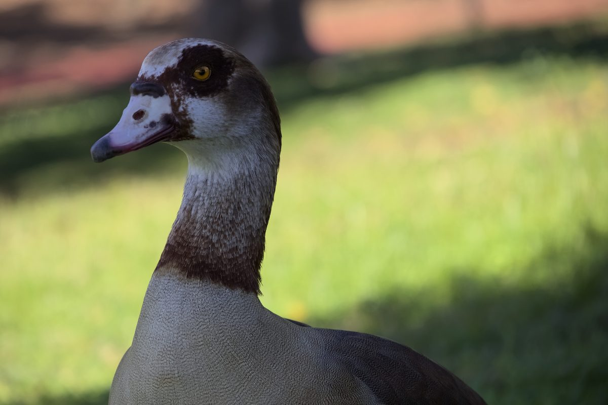

Photography by Yuval Kolodkin-Gal
Mostly geese.
Also birds that aren't geese, flowers, and the occasional sunset.
Egyptian goose · 150mm · f/7.1 · 1/125 · ISO 100Selected work
All photographs ›The sun, leaving.
13 November 2026, 16:40. Photographed at 150mm, from a safe distance.
Canon EOS R50 · 150mm · f/9 · 1/250 · ISO 100Categories
Six of them. One is doing most of the work.About
I'm Yuval, a photographer based in Israel. I photograph whatever turns up at the park, which so far is mostly geese. I started on a PowerShot and a phone, and moved to a Canon EOS R50 in November 2026. After dark I photograph the moon and stars, then stack the frames in Sequator. The rest of the time I build software, including the editor these photos pass through.
Get in touch
Prints, licensing, or anything else. Please ask before reusing.
- Camera
- Canon EOS R50
- Lens
- RF-S 18-150mm F3.5-6.3 IS STM
- Before that
- Canon PowerShot SX270 HS, a phone
- Files
- CR3 raw and JPEG
- Night work
- Stacked in Sequator
- Active
- 2024 to present